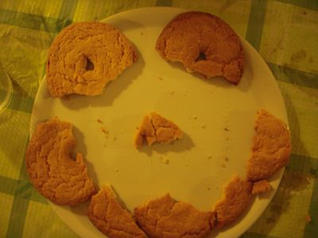
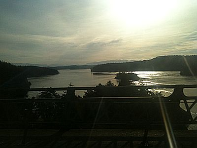

Background

“We are students to those above us, fellow travelers to those at the same level, and teachers to those below us. Above all, we are
all storytellers, leaders, and seekers of truth."
My mission is to share my stories and hear yours so that together we can help learn and grow from each other’s experiences.
When we take a step back, life is extraordinary. Taking the simplest things that we do and packaging them into a story can illustrate
a wonderful piece of art. I share my own chapters of my life story and those that I hear to help us all learn and grow from each other’s
experiences. This blog is for those who could use some inspiration, to generate and share new ideas, figuring out our problems,
leadership, and most importantly to help each other as we walk through our own life journeys.
I work on the border of community service, technology, psychology, and leadership. I am interested in creating communities that enable
people to live their lives to its fullest. In the world I imagine, people can choose the harder right over the easier wrong, through
living with honor. We should live with honor, because we are all leaders. We lead ourselves everyday through our own life journeys. I
believe though that it is our duty to learn how to lead ourselves (and others) to find purpose, compassion, and satisfaction within our
lives, while seeking a life full of adventures!
Where I am Now and Where I am Heading

I never was the type to like academics back in high school, yet now I am currently working on publishing some research that I’ve been
doing in network science. It really is true that when you find something you love, you’ll become a geek in that field. One of my personal
goals for college is to read and learn as much as I can while I still have the time to learn in a relaxing setting.
I graduate my college on May 24th, 2014. From there I will be traveling the world with a really cool job for the next five years. I have
a strong passion for the US-Asia relations and hope to work in that topic and in that general region. After that, I plan to head to go to
get my Masters and my PHD in relevant topics to my passion. From there, I will continue my job or find a new job and journey through some
adventures. Eventually I plan to retire as a teacher or go full time in community service, while coaching a high school sports team. Well,
that’s the plan at least. Life seems small, when you put it in simply two paragraphs, but see what I (and you could) plan to accomplish on
this journey here!